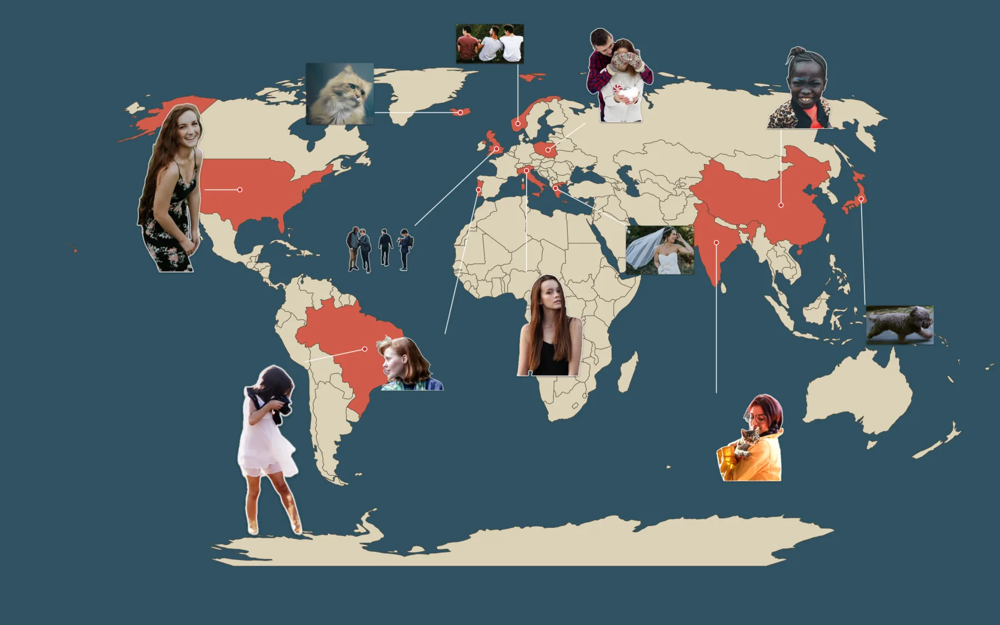

How to make a world map wallpaper with your photos
In short: Pick the Map scene, set the extent to World, and drop in your trip photos. Each one is cut out and pinned to its country, and the countries you have visited light up.
What you end up with
A world map in the middle of your desktop, with a photo on every continent you have travelled to. Each sticker is joined by a thin line to its country, and visited countries are coloured in.

What you need
A few photos, ideally with the people (or pets) you travelled with. Photos taken on an iPhone carry their location, which is how Sticta knows the country. Five to fifteen photos fill a world map nicely; too many shrink the faces.
Make it in Sticta
- Create a project and switch the scene to Map.
- In the scene settings, set Extent to World.
- Drag your photos in from Photos or Finder. Sticta cuts the people out and pins each sticker to the country in its location data.
- A photo without a location waits for you: drag its sticker onto the right country.
- Drag stickers to spread them out so none cover each other. The line to the country follows.
- Click Set as Wallpaper.
Mix the styles
Want a different look? Select a sticker and pick a style in the inspector: Classic (cut-out with an outline), Polaroid, Original photo (the photo as it was taken, no cut-out) or Clean cut. Mixing styles makes a wallpaper feel less uniform.
On the map above some stickers are plain cut-outs and a few are Original photo, which looks like a small print pinned to the country.
Private by design
Sticta never connects to the internet and your photos never leave your Mac. Privacy policy.
Free to download · Sticta Unlimited is a one-time purchase · Mac with Apple silicon, macOS 14 or later
The photos in this example are free CC0 pictures, see credits. The places on this map are demo data, not where the photos were taken. Full guide: travel map wallpaper.